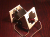
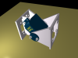
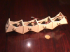
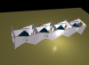

El problema de la locomoción
En la
robótica existen dos grandes áreas: manipulación
y locomoción. La manipulación es la capacidad de
actuar sobre los objetos, trasladándolos o modificándolos.
Este área se centra en la construcción de manipuladores
y brazos robóticos. La locomoción es la facultad de un
robot para poder desplazarse de un lugar a otro. Los robots con
capacidad locomotiva se llaman Robots móviles.
Uno de los grandes
retos en el área de la locomoción es el de desarrollar
un robot que sea capaz de moverse por cualquier tipo de entorno,
por muy escarpado que sea. Esto tiene especial interés en la
exploración de otros planetas, en los que no se sabe qué
tipo de terreno nos podemos encontrar.
Un nuevo enfoque: Robótica Modular
Reconfigurable
Hasta 1993, se
diseñaban robots para cada tipo de terreno. En 1994
apareció el primer robot basado en los paradigmas de la
robótica
modular reconfigurable
: Polybot.
¿Por qué no trabajar en una nueva línea de
investigación en la que no se diseñen robots
específicos para cada terreno, sino que el propio robot se
adapte al terreno, modificando su forma y su manera de de
desplazarse?
Mark
Yim se
puede considerar como el padre de esta disciplina. Actualmente está
en el PARC,
trabajando en la tercera
generación
de módulos para Polybot.
Objetivos de la Tesis
Los objetivos no están
del todo fijados. Sin embargo, las líneas de investigación
se centran en las siguientes ideas:
Plataforma.
Desarrollo de una plataforma de trabajo para investigar en el campo
de la Robótica modular reconfigurable, a tres niveles:
Mecánica
Electrónica
Software
Hardware
reconfigurable. En vez de diseñar un hardware "estático",
tiene más sentido trabajar con hardware reconfigurable. Si un
robot modular reconfigurable puede cambiar su forma para adaptarse
al medio por el que se desplaza, parece lógico pensar que
también tenga la capacidad de reconfigurar su hardware.
Que pueda cambiar su forma y también su hardware.
Estudio
de la locomoción en robots ápodos. Aplicar la
plataforma desarrollada para estudiar la locomoción,
centrándose en los parámetros estabilidad,
velocidad y consumo. Estudio restringido a la
locomoción estáticamente estable. Obtener
resultados en los casos:
Generación
de movimiento. Una vez caracterizado el movimiento, se
desarrollará un "motor" capaz generar las
secuencias de movimiento óptimas, según las
especificaciones del operador (reducción de consumo, aumento
de la estabilidad, mayor velocidad...).
Licencia
|

|
La Tesis se va a
desarrollar en lo posible bajo sistemas GNU/LINUX. Todo el
software desarrollado estará bajo licencia
GPL.
El hardware será abierto, estando disponibles todos los
esquemas, PCBs y ficheros de fabricación, para que
cualquier persona o instutición lo pueda fabricar.
Asimismo, se facilitarán todos los planos mecánicos.
|
Robot Cube Revolutions [2004]
Construcción
del prototipo Cube
Revolutions,
constituido por 8 Módulos
Y1
conectados en fase.
Trabajo de iniciación
a la investigación [2003]
Título:
Diseño
de Robots Ápodos
Se ha creado una
plataforma para trabajar con robots modulares, aplicada a los robots
ápodos. El trabajo se divide en las siguientes partes:
Estado
del arte sobre los robots ápodos existentes, centrándose
en la robótica modular reconfigurable aplicada al problema de
la locomoción.
Diseño
y construcción de los módulos
Y1.
Primera generación de módulos para la construcción
de robots modulares. Tienen un único grado de libertad,
constituido por un Servo
Futaba 3003.
Tienen la característica de poderse unir en fase o en
desfase. Además de los planos, se ha desarrollado un
modelo virtual.
Construcción
del robot ápodo Cube
Reloaded,
a partir de 4 módulos
Y1
conectados en fase. Se adapta la electrónica y software
desarrollados para Cube
2.0
Se
proponen y evalúan dos alternativas de control basadas en
FPGA. Una mediante lógica combinacional y secuencial, y
otra usando una CPU empotrada.
Pruebas de
movimiento. Cube Realoded consigue superar un circuito de
pruebas constituido por un cilindro de papel de 8cm de diámetro
y un escalón de 3.5cm de alto, lo que pone de manifiesto la
versatilidad en la locomoción.
|

|

|

|

|
|
Módulo Y1
|
Modelo 3D
|
Cube Reloaded
|
Cube Reloaded 3D
|
Periodo de Docencia [2002]
Trabajos
relalizados en el periodo de docencia del Doctorado:
Proyecto
Labobot
: Control de Servos a traves de una FPGA.
Desarrollada una unidad de PWM en VHDL, para el control de Servos
Futaba 3003.
Como aplicacion práctica se mueve un sistema constituido por
dos minicamaras conectadas a dos servos cada una. El software está
en C y permite reproducir una serie de secuencias programadas. La
plataforma de trabajo es la tarjeta LABOMAT
que incorpora un microprocesador 68360 y una FPGA XC4013E de Xilinx,
entre otras cosas.
Tarjeta
JPS-XPC84
:Entrenadora para FPGA.
Entrenadora basada en hardware abierto para las FPGAs de la familia
4000 y Spartan I de Xilinx. Puede trabajar en modo autónomo,
cargando el bitstream de configuración desde una
eeprom serie integrada, o bien se puede descargar desde el PC o un
microcontrolador externo.
Principales
líneas de investigación en robots ápodos.
En este trabajo se muestran los modelos más significativos
que se están desarrollando en los principales centros de
investigación, analizando las tecnologías y los
problemas que se resuelven.
Servicio
SMS: un enfoque práctico.
Aplicación GTERM.
Trabajo no relacionado directamente con mi tesis. Programada en C,
usando las librerías gráficas GTK 1.2. Permite enviar
mensajes SMS desde el PC utilizando un módem GSM.
Trabajos previos. [2001]
En mi proyecto fin de
carrera: "Diseño y construcción de un robot
articulado que emula modelos animales: aplicación a un
gusano", desarrollé el robot gusano Cube
2.0.
Las dos preguntas fundamentales que motivaron su realización
fueron las siguientes:
Los resultados
obtenidos fueron muy esperanzadores, lo que dió pie a
continuar con las investigaciones realizando esta tesis doctoral.
Puedes encontrar todo el trabajo publicado aquí.
Créditos
Links
Noticias
1/Ene/2006:
Actualización. Añadido
enlace a la nueva versión: Cube
Revolutions.
22/Dic/2003:
Actulización: Añadidos enlaces a Cube
Reloaded
y al trabajo de iniciación a la investigación Diseño
de robots ápodos
29/Ago/2003:
Actualización: Trabajo de iniciación a la
investigación, introdución y objetivos
20/Mar/2002:
Versión inicial de la página
IEA ROBOTICS
Juan González